News
- 2026.06.18 Paper accepted to ECCV, Malmö, Sweden. [Project] [arXiv]
- 2026.06.15 Joined the Autonomy & AI team at Rivian as a staff ML engineer.
- 2026.06.11 Invited talk at EECS, Queen Mary University of London.
- 2026.02.20 Paper accepted to IEEE/CVF CVPR (Findings), Denver, CO, USA. [arXiv]
- 2025.11.24 Paper accepted to Springer IJCV. [Project] [IJCV-SharedIt-PDF] [article] [demo]
- 2025.08.11 Paper accepted to Springer IJCV. [article]
- 2025.02.26 Paper accepted to IEEE/CVF CVPR, Nashville, TN, USA. [Project] [arXiv] [open access]
- 2024.12.12 Invited talk at the Department of AI, Korea University, South Korea.
- 2024.12.02 Invited talk at the Graduate School of AI, POSTECH, South Korea.
- 2023.10.09 The ILSH-VSCHH CodaLab challenges are now open for new [Validation] and [Test] submissions.
- 2023.10.02 Released the ILSH dataset and VSCHH 2023 challenge papers at [ICCVW 2023].
- 2023.05.15 Launched the 'To NeRF or not to NeRF: VSCHH Challenge' at ICCV 2023. [WS] [CodaLab]
- 2022.11.01 Joined the 3D Vision Team at Huawei Noah's Ark Lab as a Senior Research Scientist.
- 2022.06.10 Invited talk at the Global Mentoring Program, KIST-UST, South Korea.
- 2022.06.06 Joined the R&D team at Disguise as a Software Engineer (Founding Research Specialist).
- 2022.05.26 Released the Message Passing Framework source code at ICRA 2022. [Code]
- 2022.02.15 Invited talk at the Graduate School of Culture Technology, KAIST, South Korea.
- 2022.01.31 Paper accepted to IEEE ICRA, Philadelphia, USA. [Project] [Code] [pdf]
- 2022.01.14 Invited talk at Mokpo Hongil High School, South Korea.
- 2021.07.22 Invited talk at the HCI Research Center, Dankook University, South Korea.
- 2021.05.11 Joined the Personal Robotics Lab in the ISN Group at Imperial College London as a Research Associate.
- 2020.10.29 Invited talk at Facebook Reality Labs, Redmond, USA.
- 2020.08.10 Released the EPIC-Tent 2019 dataset and annotations. [Teaser Video] [Dataset] [Annotation]
- 2019.10.08 Invited to serve as a Conference Track Area Chair for IEEE VR 2020.
- 2019.08.21 Workshop paper accepted to the IEEE ICCV Workshop on EPIC, Seoul, South Korea. [Project]
- 2019.01.31 Paper accepted to Elsevier CVIU. [Project]
- 2018.11.15 Invited to serve as a Conference Track Area Chair for IEEE VR 2019.
- 2018.05.21 Joined the Visual Information Laboratory at the University of Bristol as a Senior Research Associate (Postdoc).
- 2017.11.02 Gave an invited lecture at the Computer Laboratory, University of Cambridge, UK.
- 2017.08.25 Workshop paper accepted to the IEEE ICCV Workshop on AMFG, Venice, Italy. [Project]
- 2017.08.03 Invited talk at the Augmented Reality Research Center, KAIST, South Korea.
- 2017.08.01 Invited talk at the Intelligent Image Processing Research Center, KETI, South Korea.
- 2016.08.08 Paper accepted to IEEE Transactions on Human-Machine Systems. [Project]
- 2016.07.01 Won the Best Poster Award at the IEEE CVPR 2016 Workshop on HANDS, Las Vegas, USA (sponsored by Facebook/Oculus and Purdue University).
- 2016.07.01 Poster presentation at the IEEE CVPR 2016 Workshop on HANDS, Las Vegas, NV, USA.
- 2016.05.23 Joined the MMV Group at Queen Mary University of London as a Postdoctoral Researcher.
- 2016.05.04 Invited talk at the Graduate School of Culture Technology, KAIST, South Korea.
- 2016.04.29 Invited talk at the College of Information and Communication Engineering, Daegu University, South Korea.
- 2016.04.26 Invited talk at the Realistic Information Platform Research Center, KETI, South Korea.
- 2016.04.25 Won the Best Presentation Award at APMR 2016, Andong, South Korea.
- 2016.04.02 Invited talk at NamDoHakSuk (NDHS), South Korea.
- 2016.02.01 Invited talk at the Max Planck Institute for Informatics, Germany.
- 2015.12.18 Invited talk at Mokpo Hongil High School, South Korea.
- 2015.12.17 Invited talk at the VTouch Research Group, VTouch Inc., South Korea.
- 2015.11.12 Gave an invited lecture for the GSCT Course (GCT555: 3D Interaction Design), KAIST, South Korea.
- 2015.10.15 Invited talk at the Korea Electric Power Research Institute, KEPCO, South Korea.
- 2015.09.06 Updated full CV and research statement.
- 2015.08.20 Launched the website.
Publications
(* indicates equal contribution, † indicates corresponding author)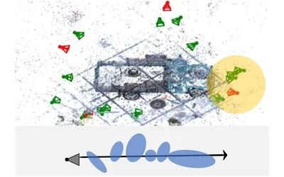
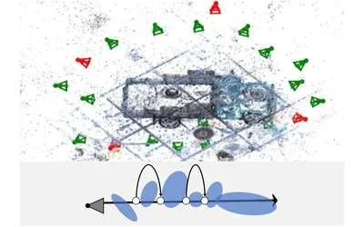
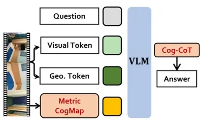
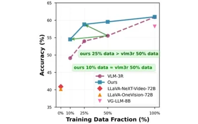
Map2Thought: Explicit 3D Spatial Reasoning via Metric Cognitive Maps
CVPR Findings, 2026IEEE/CVF CVPR Findings, pp. 7154-7164, Denver CO, USA, Jun. 3-7, 2026
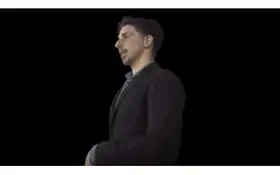
An Interactive Conversational 3D Virtual Human,
IJCV, 2026International Journal of Computer Vision (IJCV), vol.134, no. 161, Mar. 2026. (* indicates equal contribution)
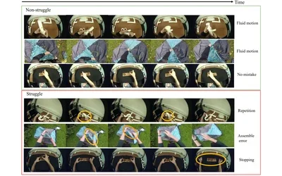
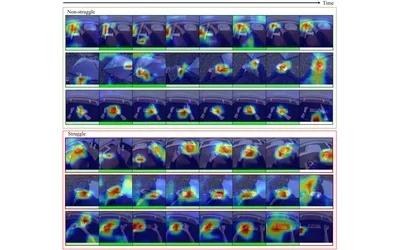
Are you Struggling? Dataset and Baselines for Struggle Determination in Assembly Videos,
IJCV, 2025IJCV, Aug. 2025
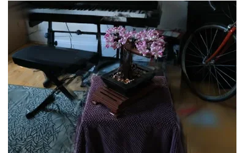
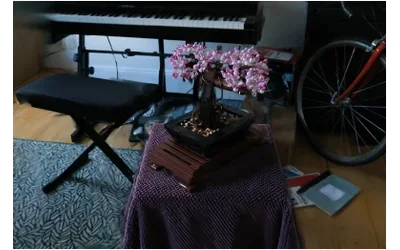
CoMapGS: Covisiblility Map-based Gaussian Splatting for Sparse Novel View Synthesis
CVPR, 2025IEEE/CVF CVPR 2025, pp. 26779-26788, Nashville TN, USA, Jun. 2025
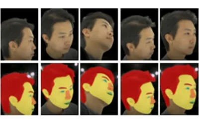
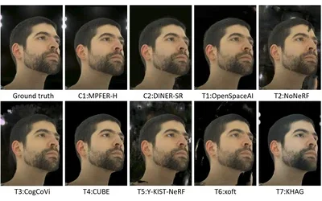
VSCHH 2023: A Benchmark for the View Synthesis Challenge of Human Heads
ICCV Workshop, 2023IEEE International Conference on Computer Vision (ICCV) Workshops, pp. 1121-1128, Paris, France, Oct 02, 2023. (* indicates equal contribution)
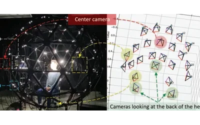
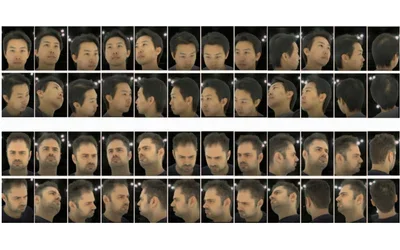
ILSH: The Imperial Light-Stage Head Dataset for Human Head View Synthesis
ICCV Workshop, 2023IEEE International Conference on Computer Vision (ICCV) Workshops, pp. 1112-1120, Paris, France, Oct 02, 2023. (* indicates equal contribution. It was published with an incorrect author list.)
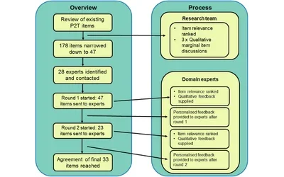
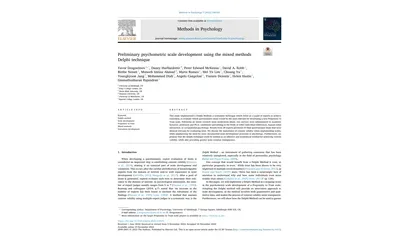
Preliminary psychometric scale development using the mixed methods Delphi technique,
Methods in Psychology, 2022Elsevier Methods in Psychology, vol. 7, article. 100103, Dec 2022
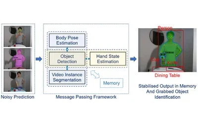
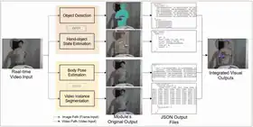
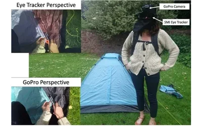
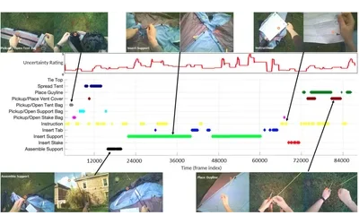
EPIC-Tent: An Egocentric Video Dataset for Camping Tent Assembly
ICCV Workshop, 2019The 5th International Workshop on Egocentric Perception, Interaction and Computing (EPIC) (In conjunction with ICCV 2019), Seoul, S. Korea, Nov. 02, 2019
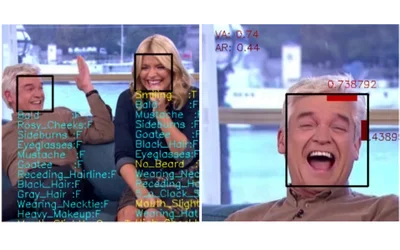
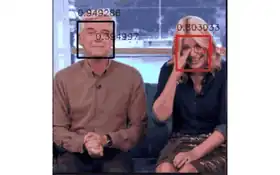
Registration-Free Face-SSD: Single Shot Analysis of Smiles, Facial Attributes, and Affect in The Wild,
CVIU, 2019Elsevier Computer Vision and Image Understanding (CVIU), vol. 182, pp. 17-29, May 2019
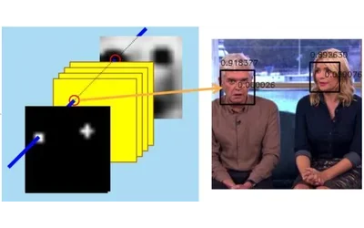
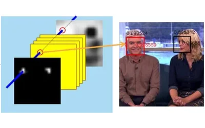
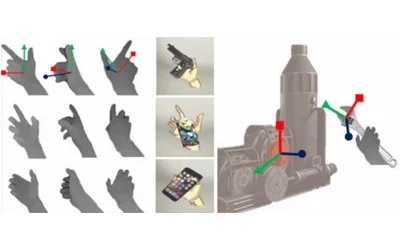
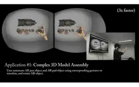
Metaphoric Hand Gestures for Orientation-aware VR Object Manipulation with an Egocentric Viewpoint,
IEEE THMS, 2017IEEE Transactions on Human-Machine Systems (THMS), vol. 47, no. 01, pp. 113-127, Feb. 2017
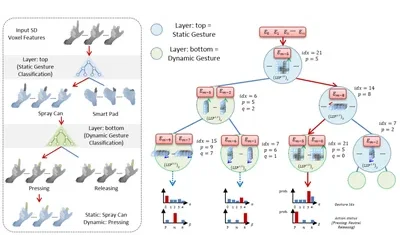
Multi-Layered Random Forest-based Metaphoric Hand Gesture Interface in VR,
CVPR Workshop, 20162nd Workshop on Observing and Understanding Hands in Action (In conjunction with CVPR 2016), Extended Abstract (poster), Las Vegas, NV, USA, Jul, 2016. (Best Poster Award!)
Best Poster Award!
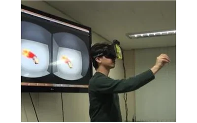
Symbolic Hand Gesture Interface in Wearable AR
APMR, 2016APMR 2016, Andong, S. Korea, Apr. 22-24, 2016. (Best Presentation Award)
Best Presentation Award
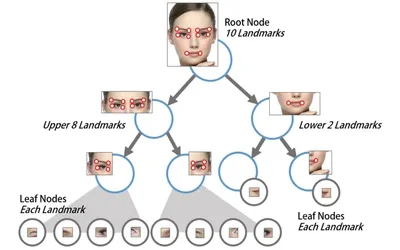
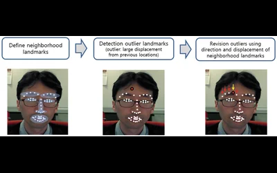
User-Independent Face Landmark Detection and Tracking for Spatial AR Interaction,
HCII, 2016Proceedings of the 18th International Conference on Human-Computer Interaction, pp. 210-220, Jul, 2016
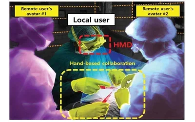
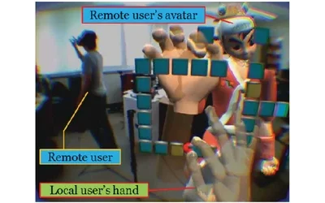
A Hand-based Collaboration Framework in Egocentric Coexistence Reality,
URAI, 2015The 12th International Conference on Ubiquitous Robots and Ambient Intelligence (URAI), pp. 545-548, KINTEX, Goyang, S. Korea, Oct. 28-30, 2015
Static-Dynamic Gesture based AR Interaction and Applications
KJMR, 2015KJMR 2015, Daiichi Takimoto, Hokkaido, Japan, Apr. 24-26, 2015
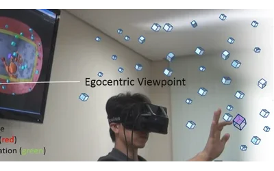
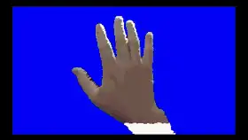
3D Finger CAPE: Clicking Action and Position Estimation under Self-Occlusions in Egocentric Viewpoint,
IEEE TVCG, 2015IEEE Transactions on Visualization and Computer Graphics (TVCG), vol. 21, no. 4, pp. 501-510, April 2015. (IEEE VR 2015 long paper (Oral) [accept rate=13.8%], TVCG Invited)
IEEE VR 2015 long paper (Oral) [accept rate=13.8%]TVCG Invited
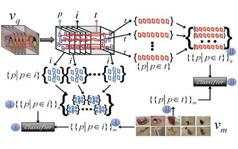
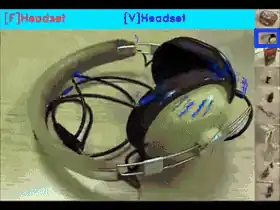
Video-based Object Recognition using Novel Set-of-Sets Representation
CVPR Workshop, 20143rd Workshop on Egocentric (First-person) Vision (In conjunction with CVPR 2014), pp. 519-526, Columbus, Ohio, USA, Jun. 2014. * indicates equal contribution.
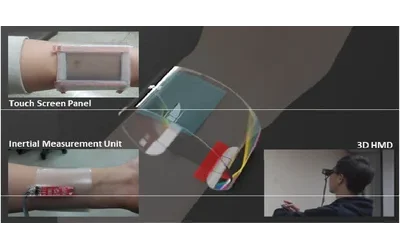
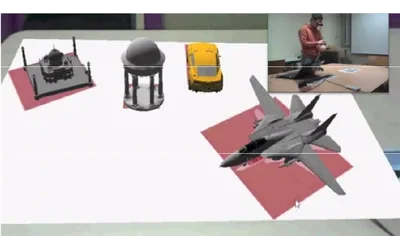
Smart Wristband: Touch-and-motion–tracking Wearable 3D Input Device for Smart Glasses,
HCII, 2014HCII 2014, LNCS 8530, pp.109-118, Heraklion, Crete, Greece, Jun. 22-27, 2014.(Best Paper Award!)
Best Paper Award!
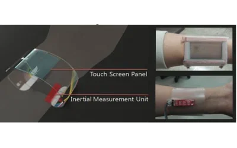
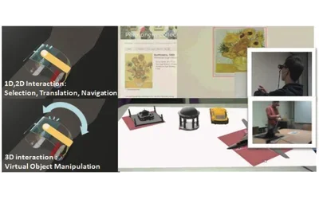
Smart Glasses: Wearable Input Device Based on Wristband-type Motion-aware Touch Panel,
3DUI, 2014IEEE 3DUI 2014 (poster), pp. 147-148, Minneapolis, USA, Mar. 29-30, 2014
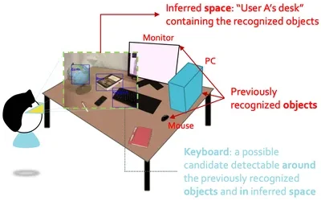
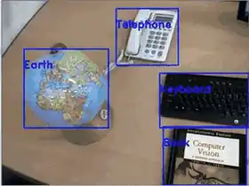
Unified Visual Perception Model and Its Application
KJMR, 2014KJMR 2014, Jeonju, S. Korea, Apr. 18-20, 2014
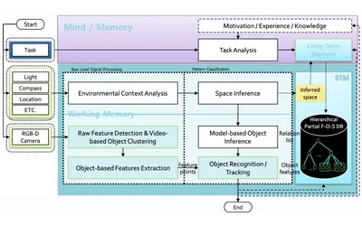
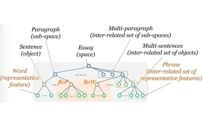
Unified Visual Perception Model for Context-aware Augmented Reality
ISMAR, 2013International Symposium on Mixed Augmented Reality 2013, Doctoral Consortium program (officially, poster), Adelaide, S.A, Australia, Oct. 1-4, 2013. - GF.ack
Local Feature Descriptors for 3D Object Recognition in Ubiquitous Virtual Reality
ISUVR, 2012International Symposium on Ubiquitous Virtual Reality 2012, pp. 42-45, Daejeon, S. Korea, Aug. 22-25, 2012 - KOCCA .ack
A Stroke-based Semi-automatic ROI Detection Algorithm for In-Situ Painting Recognition
HCII, 2011HCII2011 (Virtual and Mixed Reality, Part II), LNCS 6774, pp. 167-176, Orlando, Florida, USA, July 9-14, 2011 (LNCS) - KOCCA .ack (Demo clip:)
mARGraphy: Mobile AR-based Dynamic Information Visualization
ISUVR, 20119th International Symposium on Ubiquitous Virtual Reality 2011, pp. 37-39, Jeju, S. Korea, July 1-4, 2011 - KOCCA .ack
QR Code Data Representation for Mobile Augmented Reality
AR Standards Meeting, 2011AR Standards Meeting 2011, pp. 000-000, 2011. - KOCCA .ack
Unified Context-aware Augmented Application Framework for Supporting User-Driven Mobile Tour Guide
ISUVR, 20108th International Symposium on Ubiquitous Virtual Reality 2010, pp. 52-55, Gwangju, S. Korea, July 7-10, 2010 - KOCCA .ack
Semi-automatic Region of Interest Detection Algorithm for Realizing the Proposed Mobile Gallery Guide System,
ISUVR, 20108th International Symposium on Ubiquitous Virtual Reality 2010 (POSTER), Gwangju, S. Korea, July 7-10, 2010 - KOCCA .ack
A Novel Portable Iris Recognition System and Usability Evaluation
IJCAS, 2010International Journal of Control, Automation, and Systems, vol.8, no.1, pp.91-98, February 2010 (SCIE) (IF=0.749 (2011)) – BERC.ack
Adaptive Lip Feature Point Detection Algorithm for Real-time Computer Vision-based Smile Training System
Edutainment, 2009The 4th International Conference on E-Learning and Games (Edutainment 2009), LNCS 5670, pp. 379-389, Banff, Canada, August 9-11, 2009 (LNCS) - KOCCA .ack (Demo clip:)
A Study on Eyelid Localization Considering Image Focus for Iris Recognition
Pattern Recognition Letters, 2008Pattern Recognition Letters, Vol. 29, Issue 11, pp. 1698-1704, 1 August 2008 (SCIE) (IF = 1.559(2008), 1.034(2011)) – BERC.ack
Research Projects
Spatial Understanding via 3D VLMs
I worked on spatial understanding using 3D VLMs. We propose Map2Thought, a framework that enables explicit and interpretable spatial reasoning for 3D VLMs.
Papers:
- Map2Thought: IEEE/CVF CVPR (Findings), Denver CO, USA, June 3-7, 2026. [arXiv] [open access]
Neural Rendering for Sparse View Synthesis
I worked on sparse novel view synthesis and next-best-view selection using 3D Gaussian Splatting.
Papers:
Interactive Conversational Virtual Humans
I worked on neural rendering using 3D Gaussian Splatting. Previously, I led the organization of the 'To NeRF or not to NeRF: A View Synthesis Challenge for Human Heads' workshop at ICCV 2023.
Papers:
Dataset:
- ILSH-VSCHH CodaLabs for new [Validation] and [Test] submissions
- VSCHH 2023 challenge @ ICCV 2023 [Challenge CodaLab]
- ILSH Dataset download from ICCV 2023 workshop on To NeRF or not to NeRF: [WS]
Advanced Mixed Realities (AdMiRe)
I was involved in the Advanced Mixed Realities (AdMiRe) project. This project developed, validated, and demonstrated innovative solutions based on Mixed Reality (MR) technology, providing TV audiences with a step change in interactivity and content creators with a radical improvement in talent immersion and interaction with computer-generated elements.
Trustworthy Human Robot Interaction
I was involved in the ENhanced Transparent inteRaction for trUstworthy and Safe auTonomy (EN-TRUST) project. This project investigated methods for trustworthy robotic decision-making by understanding human behavior.
Papers:
Human Behaviour Understanding in Egocentric Video
I was involved in the GLAnceable Nuances for Contextual Events (GLANCE) project, supported by the EPSRC. My goal was to understand the visual context of egocentric videos to provide adaptive visual guidance tailored to the user.
Papers:
- Springer International Journal of Computer Vision (IJCV), Aug. 11, 2025. [article]
- IEEE ICCV Workshop on EPIC, Seoul, S.Korea, Nov. 02, 2019. [pdf] [Project page]
Dataset:
Human Behaviour/Affect Understanding
I was involved in the SensingFeeling project, supported by Innovate UK. I proposed Face-SSD, which is the first network to perform facial analysis without relying on prior preprocessing such as face detection or registration.
Research interests: Deep learning, affective computing, behaviour understanding
Papers:
- Elsevier Computer Vision and Image Understanding (CVIU), vol. 182, pp. 17-29, May 2019. [arXiv] [Project page]
- IEEE ICCV Workshop on AMFG, Venice, Italy, Oct. 28, 2017. [pdf] [Project page]
Face Landmark Detection/Tracking
, ,
I was involved in the "Highly Realistic and Human-centric VR Technology Development" project.
This work on "Metaphoric Hand Gestures for Orientation-aware VR Object Manipulation with an Egocentric Viewpoint" was conducted in collaboration with the ICVL Lab (supervised by Dr. T-K. Kim) at Imperial College London, UK.
Papers:
- IEEE Trans. on Human-Machine Systems (THMS)), vol. 47, no. 1, pp. 113-127, Feb. 2017.
- [Poster] (also presented in IEEE CVPR 2016 Workshop on HANDS, Las Vegas, NV, USA. Jul. 01, 2016 as a poster, and won the best poster award, sponsored by Facebook/Oculus and Purdue University)
- (also presented in Asia-Pacific Workshop on Mixed Reality (APMR), Andong, Korea, Apr 2016, and won the best presentation award)
This work on "3D Finger CAPE: Clicking Action and Position Estimation under Self-Occlusions in Egocentric Viewpoint" was conducted with collaborator Hyung Jin Chang, who was a member of the ICVL Lab (supervised by Dr. T-K. Kim) at Imperial College London, UK.
Papers:
- IEEE Trans. on Vis. and Computer Graphics (TVCG)), vol. 21, no. 4, pp. 501-510, April 2015.
- (also presented in IEEE VR 2015, Mar. 23-27, 2015 as a long paper, accept rate: 13.8% (13/94))
Unified Visual Perception Model for Context-aware Augmented Reality (Multiple Object)
We proposed a unified visual perception model that imitates the human visual perception process for stable object recognition in augmented reality (AR). The model is designed based on theoretical foundations in cognitive informatics, brain research, and psychological science.
Papers:
- ISMAR 2013: DC program (officially, poster), Adelaide, S.A, Australia, Oct. 1-4, 2013.
- Download: [PDF] [Demo on Youtube video]
Video-based Object Recognition
This work on "Video-based Object Recognition using Novel Set-of-Sets Representation" was conducted with collaborator Yang Liu, a member of the ICVL Lab (supervised by Dr. T-K. Kim) at Imperial College London, UK.
Papers:
- 3rd Workshop on Egocentric (First-person) Vision (In conjunction with CVPR 2014)
Local Feature Descriptors for 3D Object Recognition

This work presents 3D object recognition, extending traditional feature-point-based approaches, using novel descriptors that leverage local angles (for shape), gradient orientations (for corner texture), and color information.
Papers:
- ISUVR 2012: PDF
Semi-automatic ROI Detection for In-Situ Painting Recognition

Accurate detection of Regions of Interest (ROIs) is crucial for robust recognition under changing illumination and view directions. We proposed a stroke-based semi-automatic ROI detection algorithm using adaptive thresholding and the Hough transform for in-situ painting recognition.
Papers:
Computer Vision-based Smile Training System

This work presents an adaptive lip feature point detection algorithm for a real-time smile training system with visual instructions. The algorithm detects lip feature points regardless of lip color with minimal user input (e.g., drawing a line on the lip on-screen) by analyzing color histograms in real time. We also developed a guide model providing visual feedback, allowing users to train their smile intuitively by comparing it with the target expression.
Papers:
Finger Vein Recognition

Due to growing security requirements, biometric features such as fingerprints, faces, and irises are widely used for authentication. Finger vein recognition identifies individuals with high accuracy using unique vein patterns. This work proposes new devices and algorithms for touchless finger vein recognition.
Papers:
- Journal of Information Processing Society (B) (2008, in Korean): PDF
Iris Recognition with eyelid localization on a mobile device

We proposed a portable iris recognition system. Unlike existing systems that use custom embedded units—which limit scalability and computing power—our system consists of a standard ultra-mobile PC (UMPC), a compact USB iris camera, and near-infrared (NIR) illuminators.
Papers:
- International Journal of Control, Automation and Systems (2010): PDF
- Pattern Recognition Letters (2008): PDF
Professional Appointments
2008
2010
2012
2014
2016
2018
2020
2022
2024
2026
← Pre-doctoral Appointments
Postdoctoral & Academic/Industrial Leadership →
2008
Intern researcher @ U-VR Lab.
GIST • 2008.06.23 - 2008.08.23
Intern researcher @ U-VR Lab., GIST(Gwangju Institue of Science and Technology).
GIST • 2008.06.23 - 2008.08.23
Intern researcher @ U-VR Lab., GIST(Gwangju Institue of Science and Technology).
2008.06.23 - 2008.08.23: Intern researcher @ U-VR Lab., GIST(Gwangju Institue of Science and Technology).
2008
Research assistant supervised by Woontak Woo
GIST • 2008.09 - 2012.01
Research assistant supervised by Woontak Woo, GIST.
GIST • 2008.09 - 2012.01
Research assistant supervised by Woontak Woo, GIST.
2008.09 - 2012.01: Research assistant supervised by Woontak Woo, GIST.
2011
Visiting researcher supervised by Tae-Kyun Kim @ ICVL Lab.
Imperial College • 2011.09.01 - 2011.11.30
Visiting researcher supervised by Tae-Kyun Kim @ ICVL Lab., ICL, UK.
Imperial College • 2011.09.01 - 2011.11.30
Visiting researcher supervised by Tae-Kyun Kim @ ICVL Lab., ICL, UK.
2011.09.01 - 2011.11.30: Visiting researcher supervised by Tae-Kyun Kim @ ICVL Lab., ICL, UK.
2012
Research assistant supervised by Woontak Woo
KAIST • 2012.02 - 2015.08
Research assistant supervised by Woontak Woo, KAIST.
KAIST • 2012.02 - 2015.08
Research assistant supervised by Woontak Woo, KAIST.
2012.02 - 2015.08: Research assistant supervised by Woontak Woo, KAIST.
2013
Visiting researcher supervised by Tae-Kyun Kim @ ICVL Lab.
Imperial College • 2013.12.30 - 2014.02.28
Visiting researcher supervised by Tae-Kyun Kim @ ICVL Lab., ICL, UK.
Imperial College • 2013.12.30 - 2014.02.28
Visiting researcher supervised by Tae-Kyun Kim @ ICVL Lab., ICL, UK.
2013.12.30 - 2014.02.28: Visiting researcher supervised by Tae-Kyun Kim @ ICVL Lab., ICL, UK.
2014
Visiting researcher supervised by Tae-Kyun Kim @ ICVL Lab.
Imperial College • 2014.10.13 - 2015.01.12
Visiting researcher supervised by Tae-Kyun Kim @ ICVL Lab., ICL, UK.
Imperial College • 2014.10.13 - 2015.01.12
Visiting researcher supervised by Tae-Kyun Kim @ ICVL Lab., ICL, UK.
2014.10.13 - 2015.01.12: Visiting researcher supervised by Tae-Kyun Kim @ ICVL Lab., ICL, UK.
2015
Postdoc researcher
KAIST • 2015.08 - 2016.04
Postdoc researcher, AHRC, CTRI, KAIST.
KAIST • 2015.08 - 2016.04
Postdoc researcher, AHRC, CTRI, KAIST.
2015.08 - 2016.04: Postdoc researcher, AHRC, CTRI, KAIST.
2016
Postdoc researcher
QMUL • 2016.06 - 2018.05
Postdoc researcher, School of EE/CS, Queen Mary University of London.
QMUL • 2016.06 - 2018.05
Postdoc researcher, School of EE/CS, Queen Mary University of London.
2016.06 - 2018.05: Postdoc researcher, School of EE/CS, Queen Mary University of London.
2016
Co-affiliated postdoc researcher (visiting researcher)
Cambridge • 2016.07 - 2018.05
Co-affiliated postdoc researcher (visiting researcher), Computer Laboratory, University of Cambridge.
Cambridge • 2016.07 - 2018.05
Co-affiliated postdoc researcher (visiting researcher), Computer Laboratory, University of Cambridge.
2016.07 - 2018.05: Co-affiliated postdoc researcher (visiting researcher), Computer Laboratory, University of Cambridge.
2018
Senior research associate
Bristol • 2018.05 - 2021.04
Senior research associate, Dept. of CS, University of Bristol.
Bristol • 2018.05 - 2021.04
Senior research associate, Dept. of CS, University of Bristol.
2018.05 - 2021.04: Senior research associate, Dept. of CS, University of Bristol.
2021
Research associate
Imperial College • 2021.05 - 2022.06
Research associate, ISN Group, Dept. of EEE, Imperial College London.
Imperial College • 2021.05 - 2022.06
Research associate, ISN Group, Dept. of EEE, Imperial College London.
2021.05 - 2022.06: Research associate, ISN Group, Dept. of EEE, Imperial College London.
2022
Software engineer (Founding Research Specialist)
Disguise • 2022.06 - 2022.10
Software engineer (Founding Research Specialist), R&D Team, Disguise.
Disguise • 2022.06 - 2022.10
Software engineer (Founding Research Specialist), R&D Team, Disguise.
2022.06 - 2022.10: Software engineer (Founding Research Specialist), R&D Team, Disguise.
2023
Co-affiliated researcher (academic visitor)
Imperial College • 2023.07 - 2023.12
Co-affiliated researcher (academic visitor), Dept. of Computing, Imperial College London.
Imperial College • 2023.07 - 2023.12
Co-affiliated researcher (academic visitor), Dept. of Computing, Imperial College London.
2023.07 - 2023.12: Co-affiliated researcher (academic visitor), Dept. of Computing, Imperial College London.
2022
Senior Research Scientist & Sub-project Lead
Huawei Noah's Ark • 2022.11 - 2026.04
Senior Research Scientist & Sub-project Lead, 3D Vision Team, Huawei Noah's Ark Lab London.
Huawei Noah's Ark • 2022.11 - 2026.04
Senior Research Scientist & Sub-project Lead, 3D Vision Team, Huawei Noah's Ark Lab London.
2022.11 - 2026.04: Senior Research Scientist & Sub-project Lead, 3D Vision Team, Huawei Noah's Ark Lab London.
2026
Staff ML Engineer
Rivian • 2026.06 - Present
Staff ML Engineer, Autonomy & AI Team, Rivian UK Limited London.
Rivian • 2026.06 - Present
Staff ML Engineer, Autonomy & AI Team, Rivian UK Limited London.
2026.06 - Present: Staff ML Engineer, Autonomy & AI Team, Rivian UK Limited London.
Academic Activities
Academic Leadership
Organiser
ICCVW 2023Organiser of To NeRF or not to NeRF: VSCHH @ ICCV 2023,
ISUVR* (General Chair) 2015General chair, International Symposium on Ubiquitous Virtual Reality,
ISUVR* (Organizing Chair) 2013Organizing chair, International Symposium on Ubiquitous Virtual Reality,
ISUVR* (Student Volunteer Chair) 2012Student volunteer chair, International Symposium on Ubiquitous Virtual Reality
Area Chair
IEEE VR 2020Area Chair, IEEE Conference on Virtual Reality and 3D User Interfaces; Conference Papers Category,
IEEE VR 2019Area Chair, IEEE Conference on Virtual Reality and 3D User Interfaces; Conference Papers Category
* ISUVR was a vibrant international symposium driven by dedicated doctoral researchers, primarily from KAIST, in collaboration with peers from various domestic and international academic institutions. Replicating the rigorous peer-review and program design of major international conferences, the symposium invited global submissions and featured keynote and invited academic speakers from world-renowned institutions, including CMU, Columbia University, Georgia Tech, Imperial College London, MSR, EPFL, USC, DFKI, and Fraunhofer institute IPSI. The initiative fundamentally functioned to cultivate academic leadership and establish a premier network for emerging leaders in the AR/VR community.
Reviewer Service
CV / ML
ECCV (2026 - Present)Reviewer for European Conference on Computer Vision,
IJCV (2023 - Present)Review for International Journal of Computer Vision,
CVPR (2020 - Present)Reviewer for IEEE/CVF Computer Vision and Pattern Recognition,
Pattern Recognition (2019 - Present)Review for Pattern Recognition,
BMVC (2017 - 2019)Technical Program Committee, British Machine Vision Conference,
CVPRW/ICCVW/ECCVW TPC (2016 - 2019)Technical Program Committee for CVPR/ICCV/ECCV Workshops (HANDS, EPIC),
IVC (2016 - 2018)Review for Image and Vision Computing
AR / VR
IEEE TVCG (2016 - Present)Review for IEEE Transactions on Visualization and Computer Graphics,
Augmented Human (2016)Reviewer for Augmented Human International Conference,
ISMAR (2011 - 2015)Review for IEEE International Symposium on Mixed and Augmented Reality
Human-Machine Interaction
Ent. Computing (2022)Review for Entertainment Computing,
IEEE FG (2017 - 2018)Technical Program Committee, IEEE Conference on Automatic Face and Gesture Recognition,
Sensors (2017)Review for Sensors (ISSN 1424-8220),
KING Computing (2015)Review for Korean Institute of Next Generation Computing,
IJRA (Robotics/Auto) (2009)Review for International Journal of Robotics and Automation
- [2025. 12.] : Best Technology Breakthrough Award, Huawei London Research Center (LRC) Year End Ceremony.
- [2024. 12.] : Best Technology Breakthrough Award, Huawei London Research Center (LRC) Year End Ceremony.
- [2023. 12.] : Best Technology Breakthrough Award, Huawei London Research Center (LRC) Year End Ceremony.
- [2016. 07.] : Y.Jang, I.Jeon, T-K.Kim, W.Woo, Best Poster Award at IEEE CVPR16 Workshop on HANDS, Las Vegas, USA, sponsored by Facebook/Oculus and Purdue University.
- [2016. 04.] : Y.Jang, I.Jeon, T-K.Kim, W.Woo, Best Presentation Award of Asia-Pacific Workshop on Mixed Reality (APMR) 2016, 22-24 Apr.2016, Andong, S.Korea.
- [2014. 06.] : J.Ham, J.Hong, Y.Jang, S.H.Ko, W.Woo, Best Paper Award of the 2nd International Conference on Distributed, Ambient and Pervasive Interactions (in the context of HCII 2014), 22-27 Jun.2014, Crete, Greece.
- [2014. 02.] : Creative Challenge 2013, "AirSculpt, WritstBand" Projects are awarded by SK Telecom co. (I was participated as a team mentor)
- [2012. 08.] : Y.Jang, W.Hwang, Y.Kim, H.Son, Z. Zhang, The 1st Prize in Design Challenge Activity (Topic: Fun in AR Glasses), ISUVR2012 (at KAIST).
- [2012. 07.] : N.Park, Y.Jang, W.Woo, 정보과학회 2012 한국컴퓨터종합학술대회 우수논문상 {Korea Computer Congress 2012(KCC 2012); Best Paper on KCC2012 (at Jeju Phoenix Island Hotel)}
- [2012. 06.] : Y.Jang, J.-W.Kim, S.G.Moon, T.-J.Nam, D.S.Gwon, W.Woo, 정보과학회 2012 한국컴퓨터종합학술대회 우수논문 {KCC 2012; Best Paper on KCC2012 (at Jeju Phoenix Island Hotel)}
- [2009. 11.] : Y.Jang, W.Woo, 정보과학회 제 36회 추계학술회('09) 우수논문 {Korean Institute of Information Scientists and Engineers (KIISE); Excellent Paper on the 36th Autumn Conference (at Ewha Womans Univ.)}
- [2012. 02. - 2015. 08.] : KAIST sponsored student (Ministry of Culture, Sports and Tourism (MCST) sponsored student), KAIST. (Full scholarship)
- [2008. 09. - 2012.01.] : Government sponsored student, GIST. (Full scholarship)
- [2010. 09.] : 다산 장학금(제1회 정보통신공학부 성적(7)/연구(17) 우수 장학생, 연구 부문 10 순위 수혜), GIST. (₩1,350,000 KRW)
- [2008. 09. - 2009. 08.] : 신입생 장학카드, GIST. (₩1,000,000 KRW)
- [2007. 09. - 2008. 08.] : 이공계 대학원 연구 장학생, 한국 과학 재단(국가 과학기술 장학사업). (₩8,000,000 KRW)
- [2006. 09.] : 무등 장학금, 무등산 구락부(무등 장학회). (₩1,000,000 KRW)
- [2004. 10.] : 무등 장학금, 무등산 구락부(무등 장학회). (₩1,000,000 KRW)
- [2004. 12.] : 대열 보일러 장학금, 남도학숙. (₩1,000,000 KRW)
- [2005. 09.] : Academic Scholoarship at The Division of Software, Sangmyung Univ. (₩1,760,000 KRW)
- [2005. 09.] : Academic Scholoarship at The Division of Software, Sangmyung Univ. (₩1,650,000 KRW)
- [2005. 03.] : 계당 장학재단 장학금, 계당 장학회 at Sangmyung Univ. (₩2,000,000 KRW)
- [2004. 09.] : Academic Scholoarship at The Division of Software, Sangmyung Univ. (₩940,000 KRW)
- [2004. 03.] : Academic Scholoarship at The Division of Software, Sangmyung Univ. (₩1,610,000 KRW)
- [2003. 09.] : 1st on The List at The Division of Software, Sangmyung Univ. (₩2,931,000 KRW)
- [2022. 01. - 2022. 03.] : Teaching Assistant(ELEC97046/97121 - Human-Centered Robotics (Spring 2021-2022), Imperial College London.
- [2017. 11. 02.]: Guest Lecture @ Computer Laboratory module (Affective Computing), University of Cambridge, UK.
- [2012. 02. - 2015. 08.] : Teaching Assistant(GCT654: Visual Computing, GCT555: 3D Interaction Design), KAIST.
- [2007. 03. - 2008. 06.] : Teaching Assistant(HCI, Programming1,2, etc.), Sangmyung Univ.
- [2005. 09. - 2005. 12.] : Tutor of "Tutoring Program(C Language)", Sangmyung Univ.
- [2005. 01. - 2005. 02.] : Teaching Assistant at Jeju Embedded Camp of Sangmyung Univ.
- [2013. 10. 01. - 2013. 10. 04.] : Student Volunteer (SV) at International Symposium on Mixed and Augmented Reality (ISMAR) 2013, UniSA, Adelaide, AUS.
- [2011. 07. 09. - 2011. 07. 14.] : SV at HCI International (HCII) 2011, Hilton Orlando Bonnet Creek, Orlando, Florida, USA.
- [2010. 07. 07. - 2010. 07. 10.] : SV at (International Symposium on Ubiquitous Virtual Reality (ISUVR) 2010, GIST at Gwangju, South Korea.
- [2009. 07. 08. - 2009. 07. 11.] : SV at ISUVR 2009, GIST at Gwangju, South Korea.
- [2008. 07. 10. - 2008. 07. 13.] : SV at ISUVR 2008, GIST at Gwangju, South Korea.
- [2005. 03. - 2005. 07.] : Leader of "The Overseas Volunteers Program(9th-China A)", Korea(March~June) - China(July), PAS(http://www.pas.or.kr).
Patents & Software Registrations
* This list is not up to date.
- "Methods and systems for processing image data," \#: 11308348, date (19/Apr/2022), inventors (Jag Minhas, Magdi Ayad, Hatice Gunes, Ioannis Patras, Youngkyoon Jang), Assignees (Sensing Feeling Limited, Cambridge Enterprise Limited, Queen Mary University of London), United States Patent
- "Method and system for providing feedback ui service of face recognition-based application," \#: 2018/0121715, date (03/May/2018), inventors (Woon Tack Woo, JO Jeonghun, Sung Sil Kim, Young Kyoon Jang), applicant (Korea Advanced Institute of Science and Technology), United States Patent
- Apparatus and method for detecting a vertex of an image," \#: 8867784, date (21/Oct/2014), inventors (Woontack Woo, Youngkyoon Jang), Assignees (Gwangju Institute of Science and Technology), United States Patent
- "휴대용 얼굴 표정 연습 장치와 그 방법. {Portable Facial Expression Training System and Methods thereof}", 국내 특허 등록(등록 번호 : 101510798, 등록일 : 2015.04.03), 발명자(장영균, 우운택, 최아영), 출원인(광주과학기술원)
- "3차원 객체 인식을 위한 RGB-D 영상 기반 객체 구역화 및 인식 방법 및 장치. {RGB-D image-based multiple objects localization and recognition}," 국내 특허 등록(등록 번호: 101486543, 등록일: 2015.01.20), 발명자(장영균,우운택), 출원인(한국과학기술원)
- "RGB-D 영상 특징점 추출 및 특징 기술자 생성 방법 및 장치. {RGB-D Image based feature point description and matching method for 3D object detection}," 국내 특허 등록(등록 번호: 101478709, 등록일:2014.12.26), 발명자(우운택, 박노영, 장영균), 출원인(한국과학기술원)
- "보완적 특징점 기반 기술자를 이용한 3차원 객체인식방법 및 장치. {Local feature descriptors utilizing local shape of features for 3D object recognition}," 국내 특허 등록(등록 번호: 101442042, 등록일: 2014.09.12), 발명자(장영균,우운택), 출원인(한국과학기술원)
- "특징 기술자 생성 장치 및 방법, 그를 이용한 영상 객체 인식 장치 및 방법. {Object Recognition utilizing Complementary Feature-point-based descriptor containing color information}," 국내 특허 등록(등록 번호: 101374726, 등록일: 2014.03.10), 발명자(장영균,김주환,문승건,남택진,권동수,우운택), 출원인(한국과학기술원)
- "관심영역 검출 장치와 방법 및 상기 방법을 구현하는 프로그램이 기록된 기록매체. {Interesting area detecting apparatus, method, and recording medium thereof capable of improving recognition efficiency in a side detection attempt}," 국내 특허 등록(등록 번호: 101272448, 등록일: 2013.05.31), 발명자(장영균,우운택), 출원인(광주과학기술원)
- "RGB-D 영상 기반 다수 객체 구역화 및 인식." 국내 특허 등록 (출원번호: 10-2013-0062620, 발명신고일:2013.03.12), 발명자(장영균, 우운택), 출원인(한국과학기술원)
- "영상의 정점 검출 장치 및 방법. {Apparatus and method for detecting a vertex on the screen of a mobile terminal}," 국내 특허 등록(등록번호: 10-1032446, 등록일 : 2011.04.25), 발명자(장영균, 우운택), 출원인(광주과학기술원)
- “지정맥을 이용한 생체 인식 방법{Method for Personal Identification Using Finger-veins}”, 국내 특허 등록(등록번호 : 10-0954776, 등록일 : 2010.04.19), 발명자(강병준, 장영균, 이현창, 박강령), 출원인(상명대학교 산학협력단)
- “홍채 인식 성능 향상을 위한 눈꺼풀 검출과 속눈썹 보간 방법 {The eyelid detection and eyelash interpolation method for the performance enhancement of iris recognition}”, 국내 특허 등록(등록 번호 : 10-0794361-00-00, 등록일 : 2008년 1월 7일), 발명자(강병준, 장영균, 박강령, 김재희), 출원인(연세대학교 산학협력단)
- 손의 홀딩 제스쳐에 대응하는 물체의 종류 및 조작 제스쳐에 대응하는 조작의 종류를 판단하기 위한 제스쳐 감지 장치 및 이에 의한 제스쳐 감지 방법. {Metaphoric Hand Gestures for Orientation-aware VR Object Manipulation}”, 국내 특허 출원중(출원 번호 : 10-2016-0037120, 출원일 : 2016.03.28), 발명자(장영균, 전익범, 김태균, 우운택), 출원인(한국과학기술원)
- 일인칭 시점에서의 클릭 감지 장치 및 이에 의한 클릭 감지 방법. {Click detecting apparatus and method for detecting click in first person viewpoint}”, 국내 특허 출원중(출원 번호 : 10-2016-0004289, 출원일 : 2016.01.13), 발명자(장영균, 노승탁, 장형진, 김태균, 우운택), 출원인(한국과학기술원)
- 얼굴 인식 기반 어플리케이션의 피드백 ＵＩ 제공 서비스 방법 및 시스템. {A recommendation system using laugher information accumulated by mobile expression-recognition device}”, 국내 특허 출원중(출원 번호 : 10-2015-0046990, 출원일 : 2015.04.02), 발명자(우운택, 조정훈, 김성실, 장영균), 출원인(한국과학기술원)
- "모바일 증강현실을 위한 QR 코드 데이터 표현. {QR code data representation for mobile augmented reality}" 국내 특허 출원중(출원 번호: 2010-0119208, 출원일: 2010.11.26), 발명자(우운택, 윤효석, 박노영, 이원우, 장영균), 출원인(광주과학기술원)
- “비접촉식 지정맥 영상 취득 장치{Capturing device for touchless finger-vein image}”, 국내 특허 출원중(출원 번호 : 10-2008-0005747, 출원일 : 2008.01.18), 발명자(박강령, 강병준, 장영균, 이현창, 이의철,정대식), 출원인(상명대학교 산학협력단)
- "비 접촉식 지정맥 인식을 위한 특징 추출 방법{The feature extraction method for finger vein recognition}”, 국내 특허 출원중(출원 번호 : 10-2007-0132446, 출원일 : 2007. 12. 17), 발명자(강병준, 장영균, 이의철, 정대식, 이현창, 박강령), 출원인(상명대학교 산학협력단).
- 우운택, 장영균, 명칭: 평면객체에 대한 선택적(반자동식 그리고 자동식) 관심영역 검출 및 인식 모듈. 등록번호: 2011-01-199-000220, 등록연월일: 2011.01.12, 프로그램저작자: 광주과학기술원
- 우운택, 최아영, 장영균, 강창구, 명칭: 투어 가이드를 위한 모바일 증강현실 기술 기반 고지도 인식 및 증강 어플리케이션. 등록번호: 2010-01-199-008107, 등록연월일: 2010.12.17, 프로그램저작자:광주과학기술원
Resources & Links
For Ph.D. students
- How to write a paper: [link]
- Jason Hong PhD's from the Faculty's Perspective - PhD students Must Break Away From Undergraduate Mentality [link]
- Graduate studies can be and will be tough. There will be numerous dead ends, frustrations, hardware and software that does not work the way it should, countless deadlines, and sleepless nights. On the other hand, there will be a lot of rewards - in the joy of making lifelong friends, mastering new skills, discovering new findings, and helping others. Perhaps the best way to close this column is with something I once heard attributed to Stu Card, a pioneer in the field of human-computer interaction: "Grad school will be the best years of your life. Having said that, get out as soon as you can"
Recent Feedback